The day's crux,
before the exam asks.
Lectures become notes, headlines are scored for your exam, and your answers get marked. Free, on your phone and your computer.
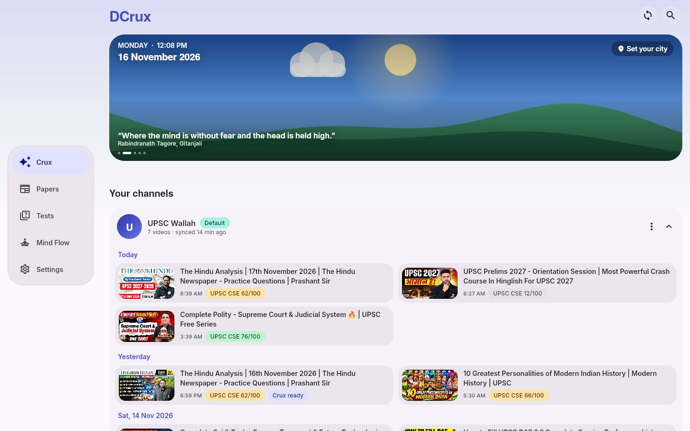
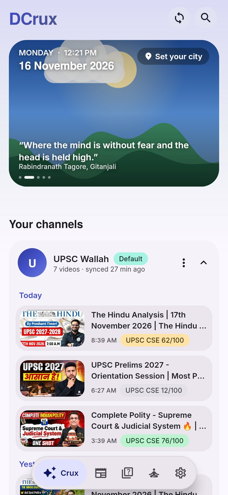
Lectures, as notes
Follow any YouTube channel. Each video becomes study notes you can read in minutes, short or detailed, written only from what the lecture said.
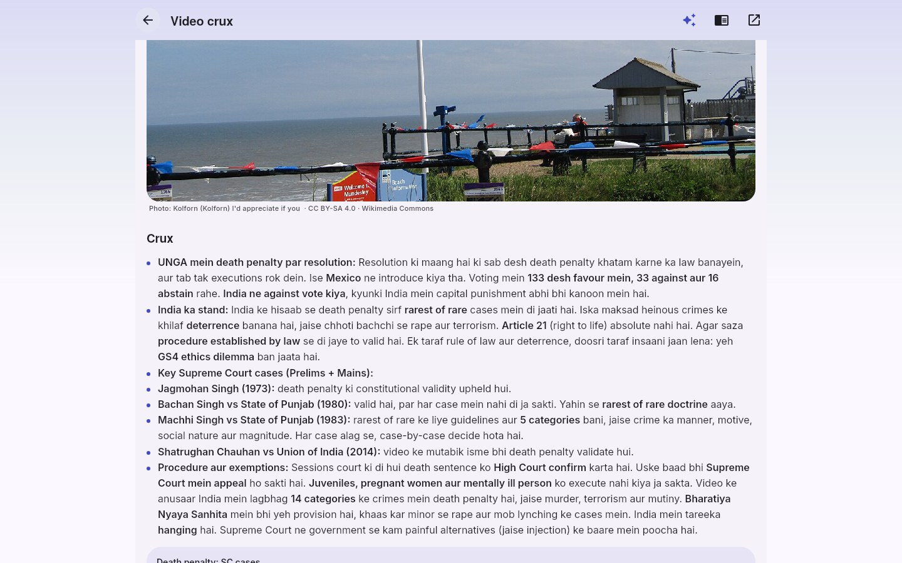
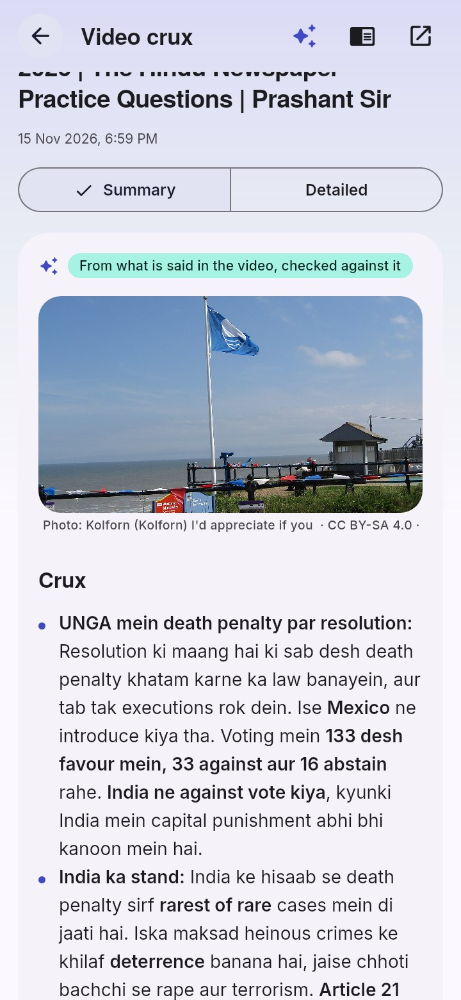
The papers, scored for your exam
The Hindu, The Indian Express, PIB and sources you add. Every headline is rated for UPSC or your State PSC, with one line on why it matters.
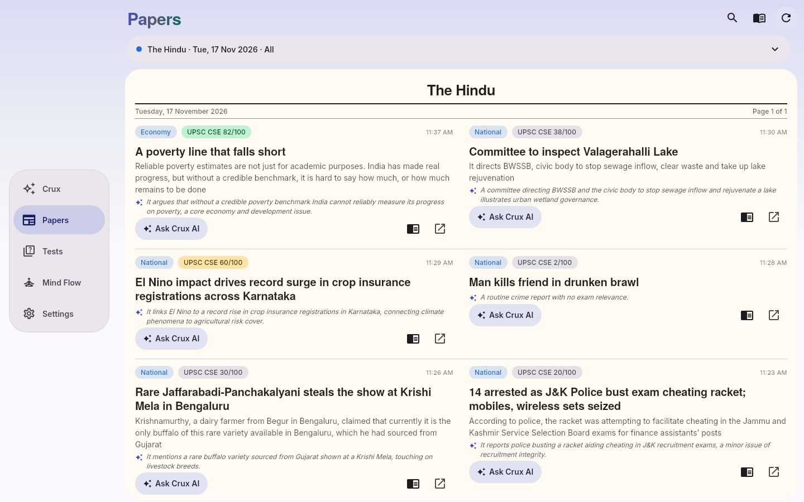
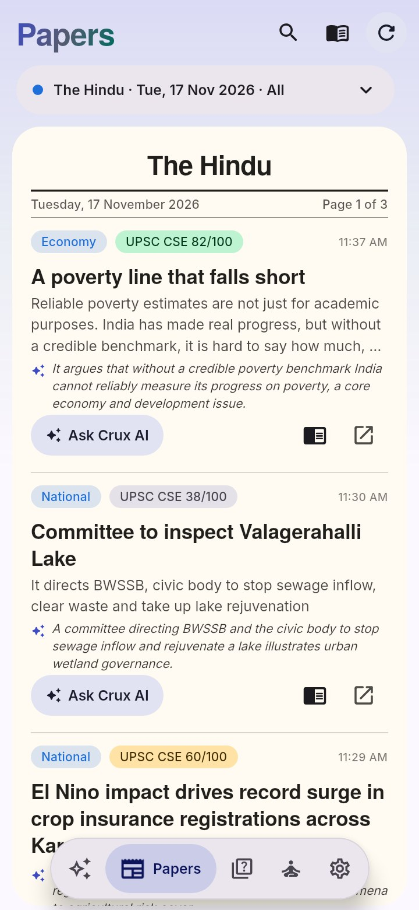
Prelims, every day
Multiple-choice tests written from the day's news, at the difficulty you choose. Retake one to beat your own score.
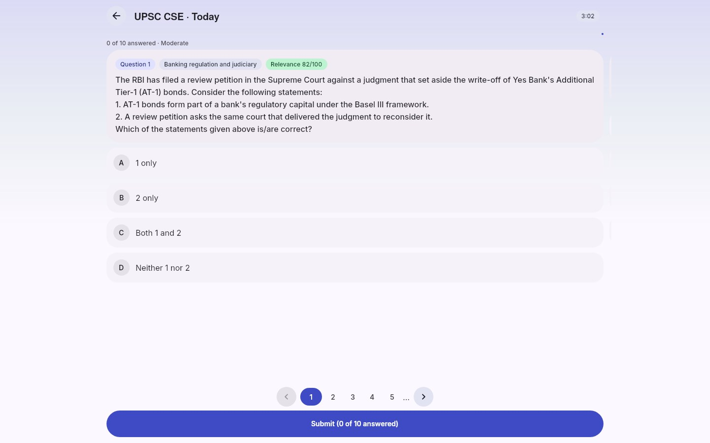
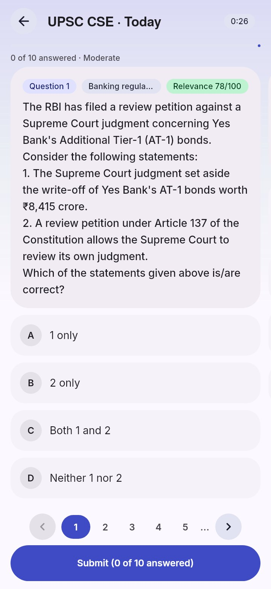
Mains, marked like a mentor
Write on paper against the clock and photograph the pages. Your handwriting is read, marked on five criteria, and remarked page by page.
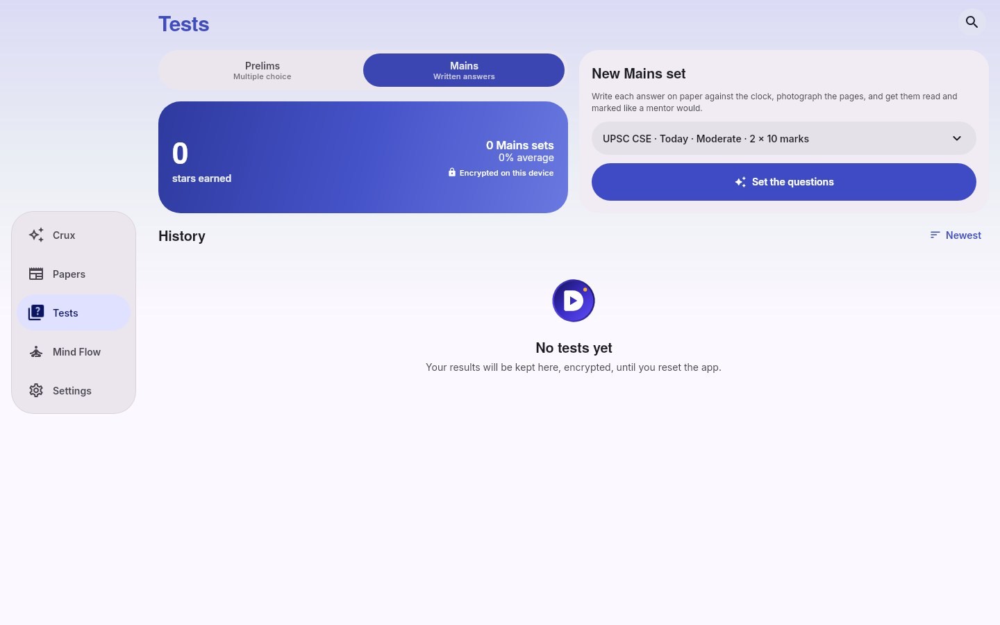
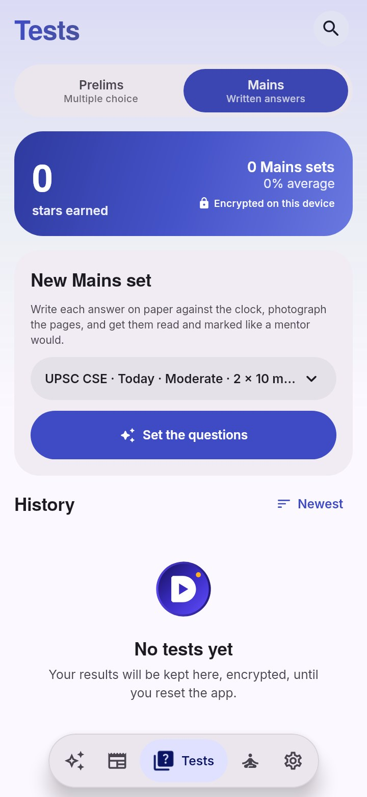
Ask Crux AI
Stuck on a note or an article? Ask there and then. Answers come from the material first, and from the web only when it is not there.
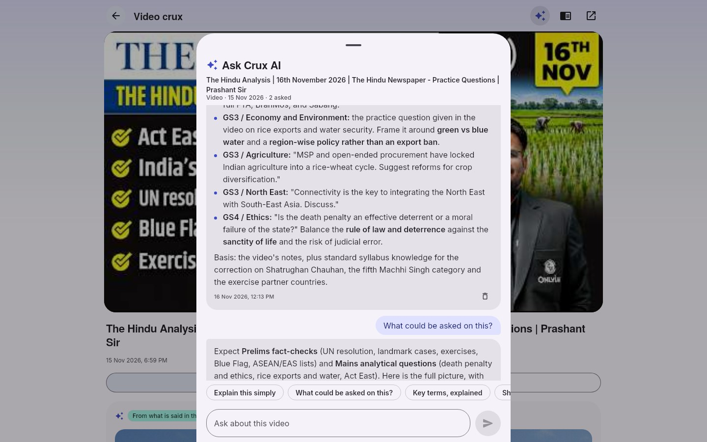
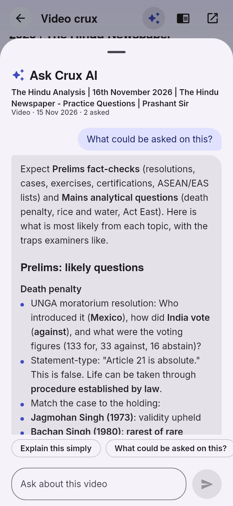
Built for the long haul
Everything else a serious aspirant needs, and nothing that gets in the way.
Every device
Android, Windows and Linux. Pair two devices by typing a 4-character code and they stay in step within a second.
Private by design
No account, no ads, no tracking. Synced data is encrypted on your device, and the service that relays it keeps nothing on disk.
Search that understands
Type words in any order, or a date like 14 nov, and find the video, note or headline you mean.
Mind Flow
Fifteen soundscapes, from rain to binaural tones, made on your device for long study hours.
Weather and real AQI
Your city's weather, and its air quality from India's official CPCB monitors.
Free and open source
No subscription and no key to buy. Read the code, build it yourself, change it.
Start with today's crux
Download once. After that the app keeps itself up to date.